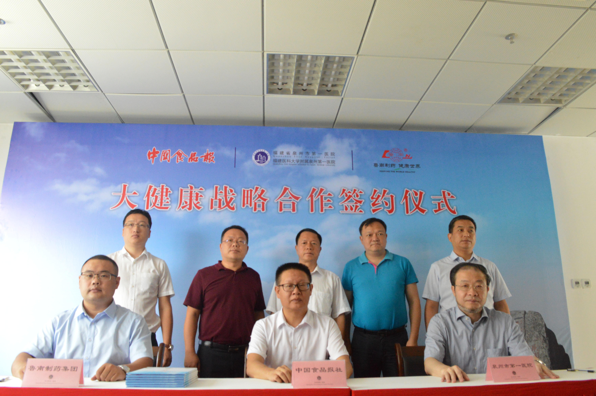

聚焦合力脱贫助农 第二届中国智慧三农大会 暨乡村振兴带头人峰会在京举行
2018-08-15 09:05:13来源: 中国食品报网
8月9—10日，主题为“合力脱贫助农、践行乡村振兴”的第二届中国智慧三农大会暨乡村振兴带头人峰会在北京举行，来自政府部门、商协会组织、三农企业、线上线下平台渠道负责人等1000多人与会。本届大会由中国电子商会主办，全国工商联农业产业商会、中国老区建设促进会、全国品牌农产品产销联合体等协办，中国电子商会智慧三农专委会和亿邦动力承办，农村互联网品牌村村乐、荆州小龙虾产业协会提供战略支持。
据悉，本次会议以党中央乡村振兴战略为主线，围绕产业振兴、脱贫助农、“互联网+”现代农业、农业品牌、农产品上行、农村消费升级等议题进行全面深入研讨、进行有效对接合作，旨在合力脱贫助农、践行乡村振兴。
传统农业亟待改造升级
2018年2月4日，中共中央、国务院正式印发了《关于实施乡村振兴战略的意见》，文件不仅明确了今后一个时期脱贫攻坚的目标和要求，而且凸显了脱贫攻坚在乡村振兴战略中的重要地位和作用。
“扶贫是一场攻坚战，要想解决这个问题，需要利用科技、信息化，互联网帮助农民脱贫致富。” 中国电子商会会长王宁说。打造智慧三农，利用互联网对传统农业进行改造升级，让中国农产品走向全球。同时，通过人工智能手段让农民、农业、农村走向科技化道路。
国务院扶贫办原党组成员司树杰表示，脱贫攻坚的成效决定着乡村振兴战略实施的进步和质量。要从注重全面推进向更加注重深度贫困地区攻坚转变，提高脱贫质量，夯实脱贫基础，从开发式扶贫为主向开发式与保障性扶贫并重转变，造血和输血协同，发挥两种方式的脱贫效益。在产业扶贫、加强农村基层组织建设和调动群众内生动力等方面，带头人的作用不可或缺。
中国电子商会智慧三农专委会名誉会长、新发地集团董事长张玉玺认为，目前，农业依然面临两个重大问题，一是农民问题，主要表现为农产品丰产，农民不一定丰收，好农产品不一定卖出好价格，农民老龄化，部分农民依然很穷。二是消费问题，目前农产品极大丰富，导致消费者出现选择障碍，不知道该选什么好，消费者对安全优质农产品有迫切需求。
张玉玺表示，扶贫是让好的农产品实现更高的价值，让农民在优势农产品品牌的助推下脱贫致富，同时让广大消费者的餐桌远离食品安全问题，让消费者吃得健康、吃得放心，实现对美好生活需要的满足，让种植者和消费者有更多的获得感和幸福感。
产业兴旺助推乡村振兴
乡村振兴，首要是产业振兴。产业兴农让龙头企业成为产业的领头雁、排头兵；市场助农让多元渠道为农业产销对接打通销路；品牌强农让更优品质、更高标准、更好品牌为农业赋能。产业主体、市场主体和品牌主体三位一体，打赢脱贫攻坚战。
大会启动了乡村振兴带头人计划，旨在全国范围内寻找和推介乡村振兴带头人，发挥其示范引领作用；凝聚发展三农事业和投身乡村振兴的磅礴力量，重塑中国农民职业尊严，重构中国农业产业版图，重建中国农村美好生活。
寻找乡村带头人创办村办企业、乡办企业，均瑶集团以捐赠作为精准贫困户入股，股权分红全部由贫困户分红，形成贫困户与企业一同发展，形成合力，实现脱贫。全国工商联农业产业商会会长、均瑶集团总裁王均豪表示，农产品龙头企业必须带着良心做农业，把农业产业链打造得更快、更强。作为农业龙头企业，以“公司+农户”的扶贫模式目前正在全国贫困地区进行精准扶贫，扶志不扶懒。
2012年，褚橙进京，本来生活网首次将传统农业与互联网电商相结合，从品牌塑造、溢价销售、产业发展等方面大力支持，使褚橙零售价从2012年的每公斤13.8元提升到2017年的每公斤33.6元，带动当地农产品规模化和产业化的发展。同时，本来生活网还与四川浦江长秋山镇政府合作，打造当地丑柑地理标志产品。通过标准化、品牌化运作，让农户每亩增收6000—8000元，有效带动了浦江地区脱贫工作。
本来生活网副总裁袁立伟表示，为农产品赋能，帮助贫困地区打造持久的市场竞争力和溢价能力。通过生产赋能，让产品更具市场竞争力；通过品控让产品品质更优、价值更高；通过品牌赋能让更多产品实现品牌溢价；通过物流赋能让田间地头到餐桌的距离更短，更安全地走向千家万户。他建议，打造农业产品标准化、规模化、信息化和品牌化，通过整合社会各界资源，在标准定制、品牌塑造、销售保障以及供应链金融、资金支持方面，实现产业支持、资源链接，形成一个良好的生态。
农业农村部农村经济研究中心主任宋洪远表示，产业兴旺是乡村振兴的重点，通过坚持质量兴农、绿色兴农，构建产业体系、经营体系，提高农业由增长导向转向体制导向，实现由农业大国向农业强国的转向。
良心谷创始人刘孝平说，乡村振兴的关键在于产业振兴。在农业发展过程中，必须要形成五化，即规模化、机械化、标准化、品质化、品牌化。他认为，产业振兴形成的可持续发展，才能促使农民有钱赚、人才引进来、产品走出去的良性循环经济发展，推动农村经济的持续改造。
此次峰会还启动了“国茶普及计划”。计划旨在联合全国的产茶民企助力民茶产区振兴，通过茶区振兴带动当地致富；通过普及国茶文化达到茶文化的普及传播；普惠全国乃至全球的茶消费者，规范国茶消费市场，让全民更实惠、更放心地喝到健康好茶。结合中国电子商会平台和资源助力茶产业发展；联合产茶区政府和全国茶叶名师做全国的公益茶文化推广活动；通过新零售技术，未来三年在全国铺设3万台自动售茶机，让消费者可以在生活、办公等消费场景中买到中国的好茶。
探索农产品上行之道
农产品上行以农村电商为媒介,打开本地特色农产品的销售渠道,让特色农产品从田间直达全国百姓餐桌。互联网发展到今天,已经给人们的生活品质带来了方方面面的提升,农产品上行成为必然的发展趋势。
中国食品（农产品）电子商务研究院院长洪涛表示，电商扶贫需要拓通道、建支点、育网军、强体系以及优化环境。通过建立渠道，线上线下结合，在贫困地区建立相应网点，一点多用，建立健全县级电商发展中心和乡镇一级网点。做好贫困地区“网络大军”人才的培养，尤其是带头人队伍。加强本地电商扶贫产业和扶贫的支撑体系，营造良好的竞争环境、农产品上行的良好生态圈和生态链。
开展实体零售店业务与打通线上渠道成为现代商超流通的两个重要渠道，流通渠道的便利能够缓解农产品滞销，例如帮助解决今年五月份河南的蒜薹以及南方沿海地区的水果滞销问题。物美集团执行董事、首席运营官许少川表示，商超零售助力农产品上行的过程中，农产品可实现直接对接，减少中间环节，特别是在质量安全方面有严格的控制体系。其次，保证农产品质量和食品安全必须大力推进供应链建设。
跨越速运运营总裁胡永表示，农村电商物流面临缺少统一规划，配送路径不畅，专业人才缺乏、服务网点少、成本居高不下的困境。农村电商物流最后一公里是农村产业经济发展的痛点、难点、焦点。他认为，互联网时代，只有充分利用信息技术，全力打造农村智慧物流供应链体系，通过自身优势精准匹配农村电商需求，才能彻底解决农村电商物流最后一公里难题，助力乡村产业振兴，真正使农民成为消费升级的受益者。
本报记者 施建平 王金臣
泉州市第一医院与中国食品报社战略合作签约仪式举行
2018-08-10 17:15:53来源: 中国食品报网
刺桐古城，金风飒爽。
为了更好地贯彻落实十九大报告中指出的“人民健康是民族昌盛和国家富强的重要标志”重要精神，创新实施食品行业媒体与医疗机构共建大健康产业、助力健康中国战略，8月10日，泉州市第一医院与中国食品报社大健康战略合作签约仪式在福建省泉州市隆重举行。中国食品报社副总编辑刘振、中共泉州市委宣传部常务副部长郑国防出席签约仪式并讲话。签约仪式由泉州市第一医院院长苏智军主持。

2016年，党中央提出了一系列健康中国的大政方针和政策，开启全民健康新时代。十九大报告中指出，“人民健康是民族昌盛和国家富强的重要标志”，进一步强调实施健康中国战略。为贯彻落实健康中国、健康福建部署要求，日前，泉州市印发了《“健康泉州2030”行动规划》，全力推进健康泉州建设。据泉州市第一医院院长苏智军介绍，泉州市第一医院是泉州市规模最大、医疗技术力量最雄厚的“龙头医院”，在保障全市860多万人民的身体健康中发挥了重要作用。 医院目前日均门诊量5000人次，全年门急诊量175万人次；连续4年上榜“中国地级城市医院竞争力100强”，名列第37位。
苏智军说，健康是人类永恒的主题，作为三甲医院，在做好院内治疗的同时，泉州市第一医院始终坚持健康指导为民服务的宗旨，做好“治未病”“慢病调养”“合理膳食”等健康管理方面的社会指导工作，通过发挥自身的专业优势，深入社区、学校，向市民宣传指导健康的生活方式，改善饮食结构，防止“病从口入”，强化患中、患后等不同治疗阶段的饮食指导，防止慢病恶化，促进居民身体健康。“这与中国食品报多年来坚持的宣传食品营养，指导健康生活的主题是不谋而合的，因此，双方的合作也注定将开启食品行业媒体与医疗机构共建大健康产业、助力健康中国战略的新时代。”苏智军说。
《中国食品报》长期专注大健康产业，着力打造全产业链融媒体综合宣传服务平台，维护大众健康，助力大健康产业。对此，中国食品报社副总编辑刘振表示，泉州市第一医院与中国食品报社达成战略合作，创造性地开拓了食品行业媒体与医疗机构共建大健康产业、助力健康中国战略的新模式、新体系，这充分体现了开拓创新的首创精神。同时，泉州市第一医院广大医护人员多年来坚持不懈地实施居民健康指导工作，引导广大市民优化饮食结构，提高身体素质，减少病患几率，提升全民素养，发挥了重要的作用，充分发挥了自身的社会责任和人文情怀，这恰恰是“红船精神”当中“忠诚为民、甘于奉献”的真实写照。相信双方的合作将进一步推动全民大健康产业的发展，促进健康中国战略的实施。
中共福建省泉州市委宣传部常务副部长郑国防在讲话中指出，泉州市第一医院与中国食品报社的战略合作，将有效加快泉州市大健康产业的发展步伐，提高全市民众健康素养，接受科学的健康指导和正确的健康消费，让人们“生得优、活得长、不得病、少得病、病得晚、提高生命质量、走得安”；进一步倡导健康生活方式，消除亚健康、提高身体素质、减少痛苦,做好健康保障、健康管理、健康维护；帮助民众从透支健康、对抗疾病的方式转向呵护健康、预防疾病的新健康模式。
郑志强同志代表中国食品报社与泉州市第一医院院长苏智军、鲁南制药集团代表共同签署战略合作协议。
签约仪式后，泉州市第一医院院长苏智军在接受记者采访时表示，医院将以此次战略合作为契机，进一步深化医改，全力打造成闽东南一流的区域医疗、教学、科研、预防和保健中心，临床医学教育培训中心，为区域卫生事业的发展，为建设“五个泉州”作出应有的贡献，更好地为百姓健康保驾护航。
本报记者 吴雪琴